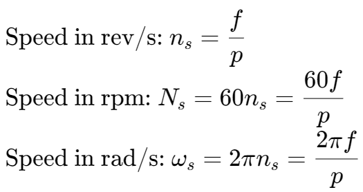
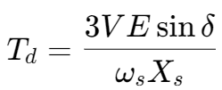
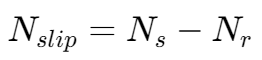
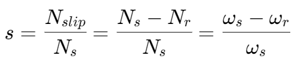
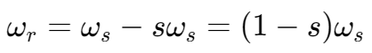
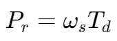
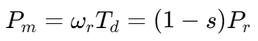
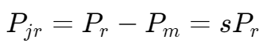
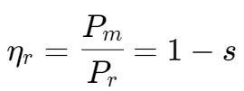
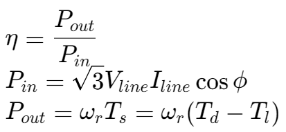

交流电机 | AC Motor
同步电机 | Synchronous Motor

- f: 频率（Hz）
- p: 极数的一半
旋转方向的扭矩：

- V: terminal voltage per phase
- E: excitation voltage per phase (the voltage induced by the magnetised rotor)
- ωs: synchronous angular velocity
- Xs: synchronous reactance (the effective reactance of one phase of the stator winding)
- δ: torque angle
转子与同步电机旋转磁场的速度差：

- Ns: 同步电机磁场转速
- Nr: 转子转速
速度差的比值,,：

转子转速：

能量转化
Power transferred to rotor:

- Td: Developed torque
Developed mechanical power:

Power lost in rotor resistance (or electrical power output from the rotor):

Rotor efficiency:

Overall efficiency:

- Ts: Shaft torque
- Tl: Loss torque